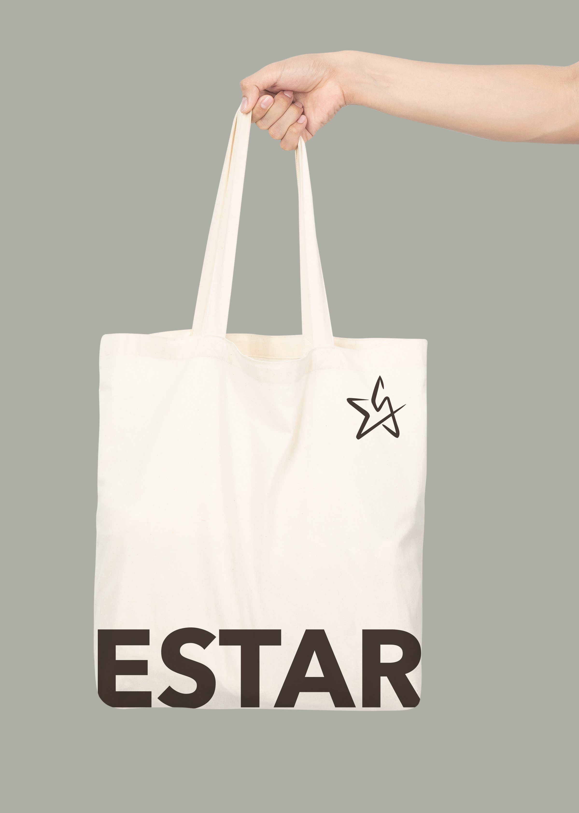
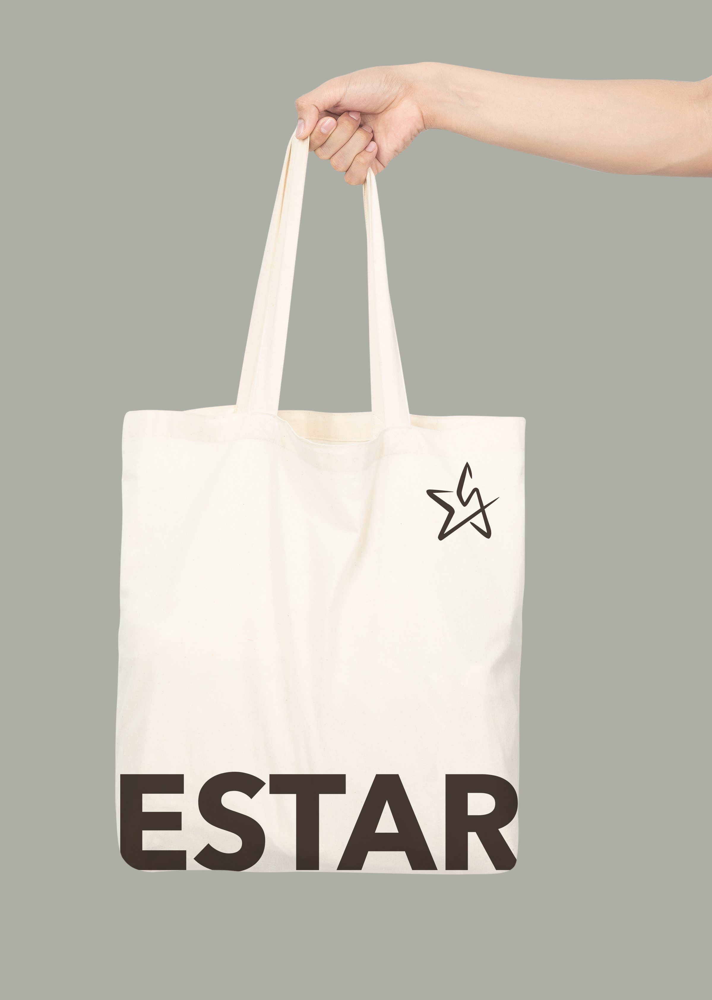
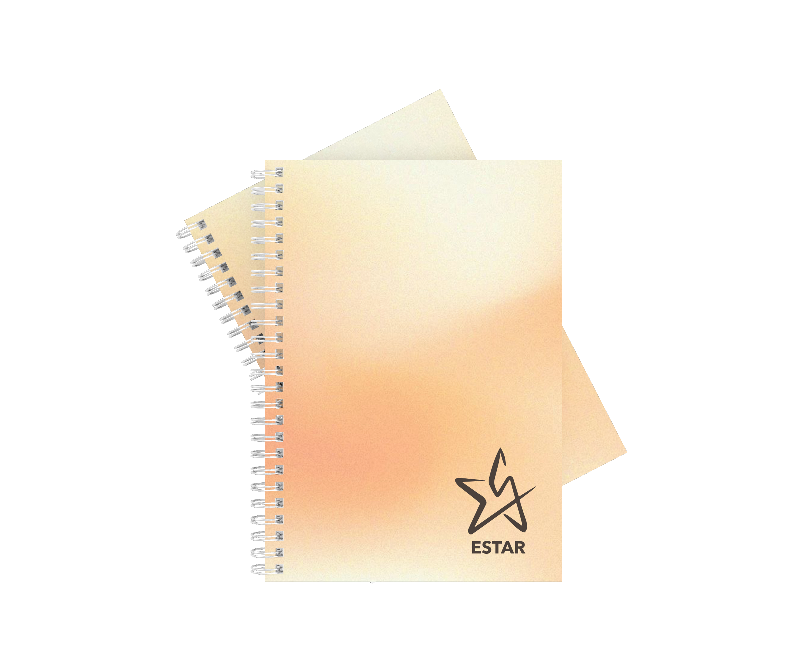
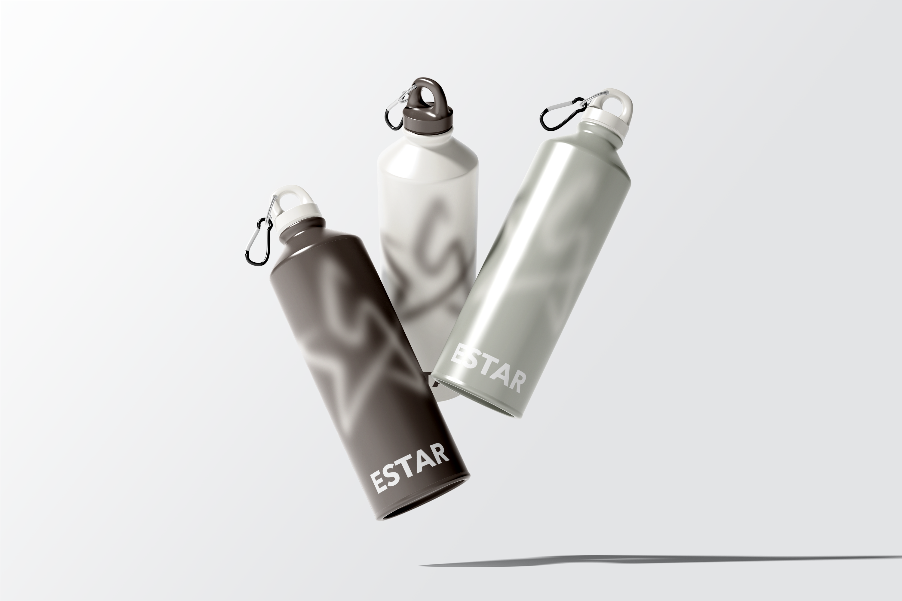
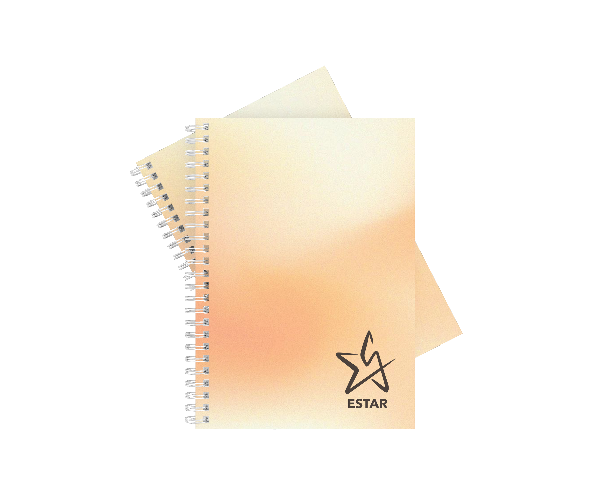
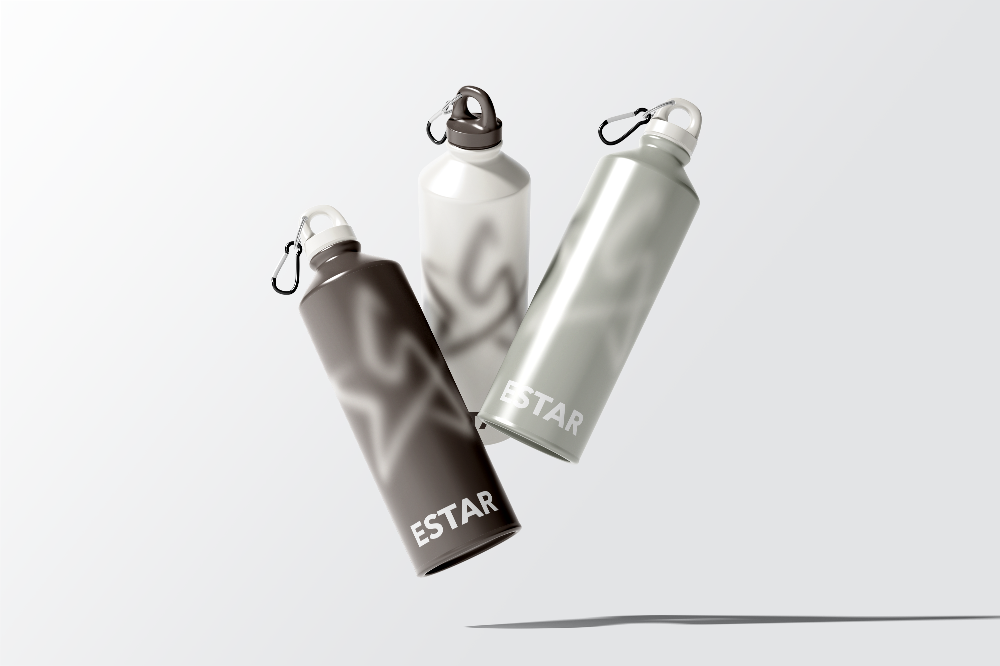
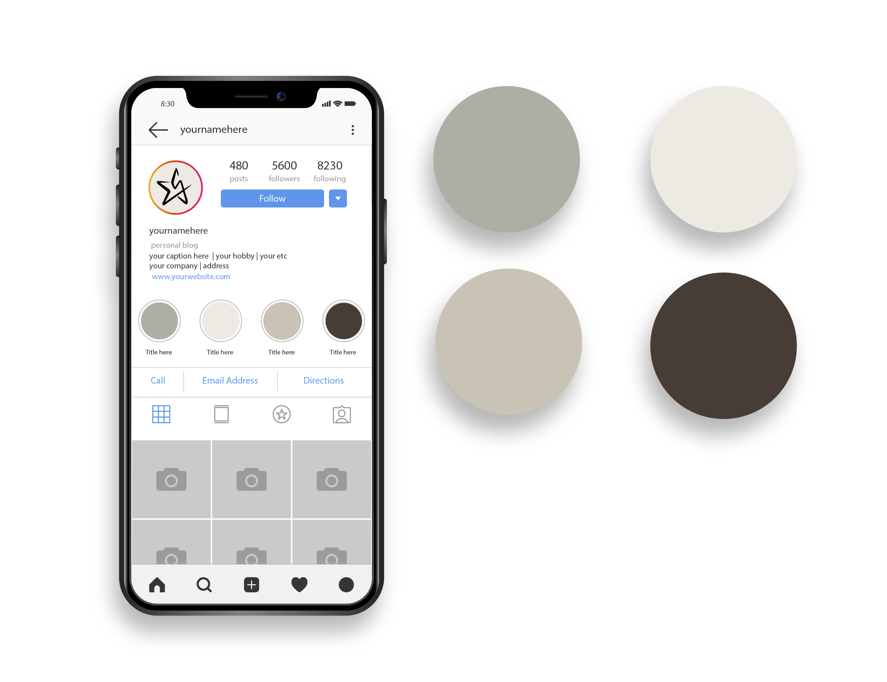
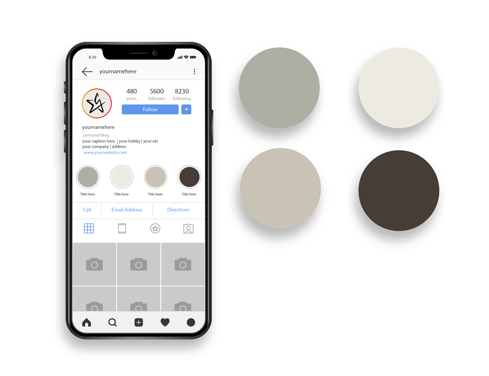

ESTAR es mucho más que un logotipo o un nombre: es una representación íntima de mi identidad como diseñadora gráfica. Esta marca nace de la unión entre mi apellido Estrella y un apodo que me ha acompañado desde siempre: “Estar”. Curiosamente, esta palabra también remite al verbo “estar”, que implica presencia, acción, conciencia. Justo eso: estar presente, estar creando, estar evolucionando.
Visualmente, ESTAR se construye con líneas limpias y un diseño sobrio, pensado para transmitir profesionalidad, elegancia y cercanía. La estrella, símbolo central del logo, es una referencia directa a mi apellido, pero también a aquello que guía, que destaca, que ilumina. Es una metáfora de la creatividad como luz en medio de lo cotidiano. La tipografía del logo refuerza la idea de equilibrio entre lo moderno y lo humano: es clara, legible y con un trazo que refleja intención. La marca fue pensada como la identidad de una futura empresa creativa, pero también como un contenedor flexible de todos mis proyectos visuales. Una firma que pueda adaptarse, evolucionar y crecer conmigo. ESTAR habla de mí: de mi estilo minimalista pero expresivo, de mi compromiso con el diseño significativo y de mi forma de entender lo visual como una herramienta de conexión emocional. No busca imponer, sino acompañar. No grita, pero deja huella. Esta marca personal es mi forma de estar en el mundo del diseño: con presencia, con sensibilidad y con muchas ganas de crear. 

 




 
